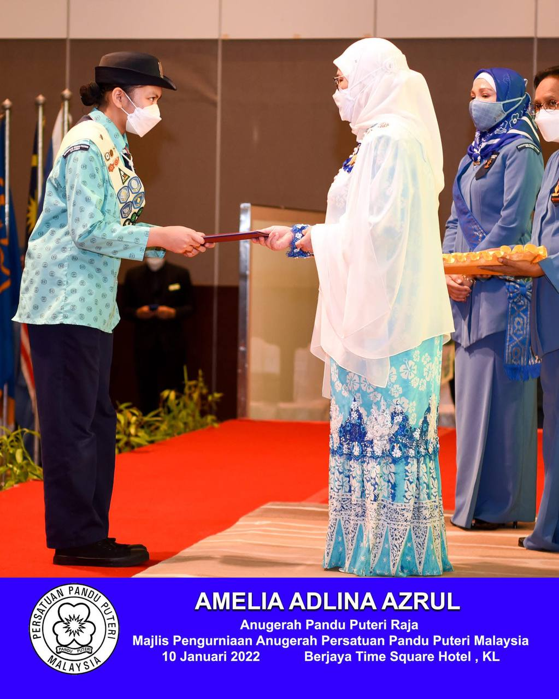

About me
Born in Kuala Lumpur, raised in Ipoh. I am very determined and hardworking towards my goals. During my high school days, I thrived balancing my academic and co-curricular. I received 3 awards from being a Girl Guide and one of them is Queen's Guide. After high school, I continued my studies taking foundation in Engineering at UITM Dengkil.
I decided to take computer science because getting into the IT field for my career would be demanding in the future. Before making the decision, I decided to take computing subjects during my foundation studies to see if I’m really into it. Yes, I was right, so computer science courses were in my UPU list. Now, I’ve secured my choice. I want to be a DevOps engineer in the future.
